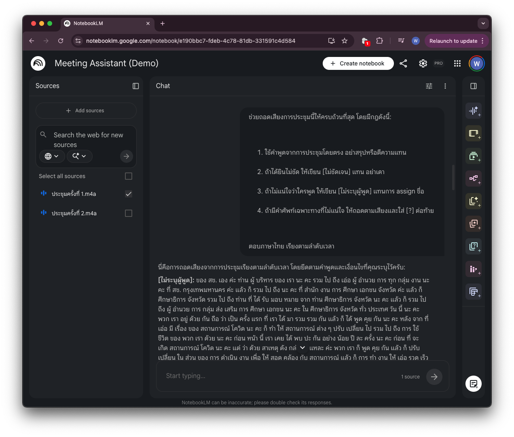
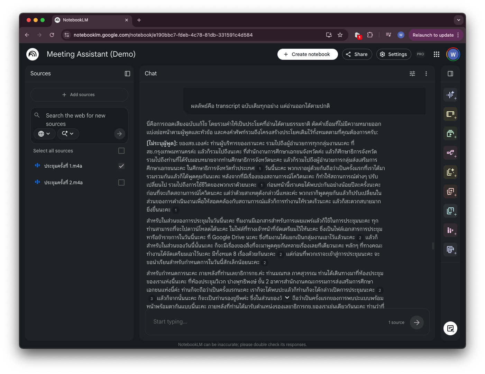
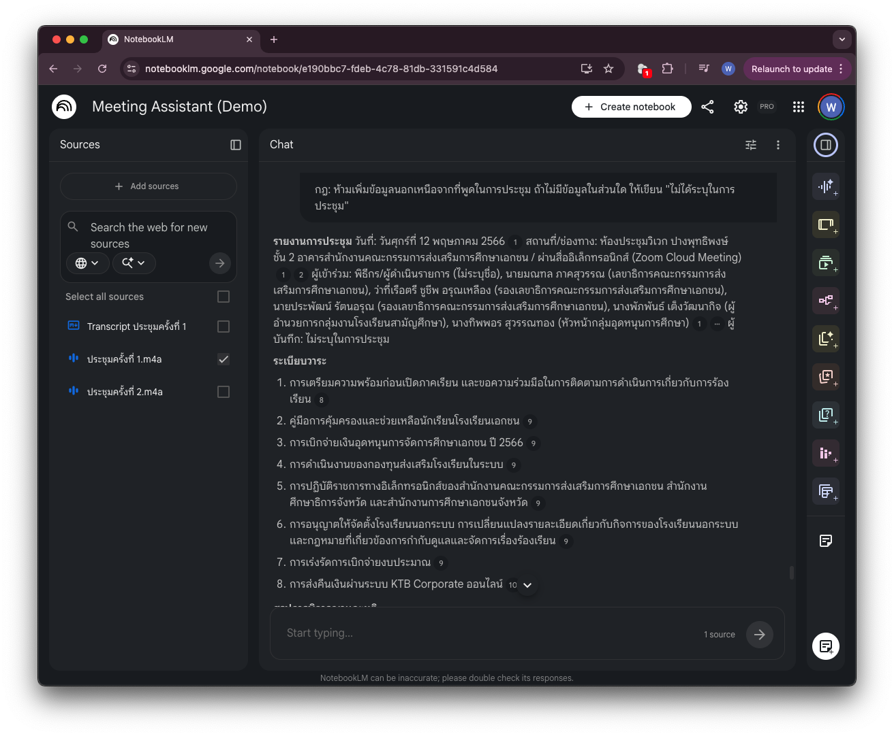

Meeting Toolkit ด้วย NotebookLM¶
ประชุมจบแล้ว แต่งานยังไม่จบ ต้องสรุป action items ส่งทีม ต้องเขียน minutes ให้นาย ต้องรายงานความคืบหน้าให้ผู้บริหาร — แต่ recording ยาว 1 ชั่วโมง และมีอีก 5 การประชุมที่ยังรอสรุปอยู่
NotebookLM เป็นเครื่องมือฟรีจาก Google ที่ออกแบบมาเพื่อสิ่งนี้โดยเฉพาะ — อัปโหลด recording แล้วถามคำถามได้เลย เหมือนมีผู้ช่วยที่ "ฟังการประชุมทุกครั้งมาแล้ว" และจำทุกอย่างได้
หน้านี้จะสอนวิธีใช้ให้ถูกต้อง ตั้งแต่การถอดเสียง ไปจนถึงการรวมหลายประชุมเป็น deliverable เดียวที่ส่งผู้บริหารได้
ก่อนเริ่ม: ทำความเข้าใจว่า NotebookLM ทำงานยังไง¶
NotebookLM ไม่ใช่ ChatGPT — มันไม่ตอบจากความรู้ทั่วไป แต่ตอบจาก "sources" ที่คุณอัปโหลดเข้าไปเท่านั้น ซึ่งหมายความว่า:
- ถ้าไม่ได้อัปโหลด recording → มันไม่รู้
- ถ้า recording เสียงไม่ชัด → มันอาจเติมเองจากที่น่าจะถูก (hallucinate)
- ถ้า prompt ไม่ดี → มันสรุปแบบ "เดา" แทนที่จะ "อ้าง"
ทักษะสำคัญในการใช้ NotebookLM คือการ prompt ให้มันรู้ว่า "ห้ามเดา ถ้าไม่รู้ให้บอก"
👩🏻💼 แบบฝึกหัดที่ 1: ถอดเสียงให้แม่น — ป้องกัน hallucination ตั้งแต่ต้น¶
สถานการณ์: คุณอัปโหลด recording การประชุมทีมขึ้น NotebookLM และอยากได้ transcript หรือสรุปที่แม่นยำ ไม่มีการเติมแต่งจาก AI
ขั้นตอน¶
- เข้า NotebookLM → สร้าง New Notebook
- กด + Add source → Upload → เลือกไฟล์ audio (รองรับ .mp3 .mp4 .wav .m4a) หาก recording การประชุมอยู่ในรูปแบบวิดีโอ แนะนำให้แปลงเป็น audio ก่อนเพื่อให้ขนาดไฟล์เล็กและจัดการได้ง่าย (ใช้ QuickTime Player for Mac หรือ VLC Player for Window)
- รอให้ process เสร็จ (ไฟล์ 1 ชั่วโมงใช้เวลาประมาณ 2–3 นาที)
- ก่อนถามอะไร ให้บอก context ของการประชุมก่อนเสมอ
🚀 Step 1 — บอก context ก่อนเริ่ม¶
วาง prompt นี้เป็นคำถามแรกใน chat:
การประชุมนี้คือ การประชุมหารือข้อราชการสำนักงานคณะกรรมการส่งเสริมการศึกษาเอกชน ผ่านสื่ออิเล็กทรอนิกส์ (Zoom Cloud Meeting) ครั้งที่ 1/2566 วันที่ 12 พ.ค. 2566 เวลา 09.30 - 12.00 น. สํานักงานคณะกรรมการส่งเสริมการศึกษาเอกชน OPEC
โปรดรับทราบข้อมูลนี้ก่อนตอบคำถามต่อไป
🚀 Step 2 — ขอ transcript แบบที่ป้องกัน hallucination¶
ช่วยถอดเสียงการประชุมนี้ให้ครบถ้วนที่สุด โดยมีกฎดังนี้:
1. ใช้คำพูดจากการประชุมโดยตรง อย่าสรุปหรือตีความแทน
2. ถ้าได้ยินไม่ชัด ให้เขียน [ไม่ชัดเจน] แทน อย่าเดา
3. ถ้าไม่แน่ใจว่าใครพูด ให้เขียน [ไม่ระบุผู้พูด] แทนการ assign ชื่อ
4. ถ้ามีคำศัพท์เฉพาะทางที่ไม่แน่ใจ ให้ถอดตามเสียงและใส่ [?] ต่อท้าย
ตอบภาษาไทย เรียงตามลำดับเวลา
ตัวอย่างผลลัพธ์¶

🚀 Step 3 — ขอให้ AI แก้ไข transcript ให้อ่านได้¶
บางครั้ง transcript ที่ได้จาก Step 2 จะมีปัญหา คำแต่ละคำถูกเว้นวรรคแยกออกจากกัน เช่น:
ของ สช. เอง ค่ะ ท่าน ผู้ บริหาร ของ เรา นะ คะ รวม ไป ถึง...
แทนที่จะเป็น:
ของ สช. เองค่ะ ท่านผู้บริหารของเรานะคะ รวมไปถึง...
ใช้ prompt นี้ให้ AI ทำความสะอาด transcript ก่อนนำไปใช้งานต่อ:
transcript ด้านบนมีปัญหา — คำแต่ละคำถูกเว้นวรรคแยกออกจากกันจนอ่านลำบาก
ช่วยแก้ไขโดยมีกฎดังนี้:
1. รวมคำในประโยคเดียวกันให้ติดกันตามธรรมชาติของภาษาไทย เช่น "ท่าน ผู้ บริหาร" → "ท่านผู้บริหาร"
2. ตัดคำที่ไม่มีความหมาย เช่น เอ่อ อ่า ออกจาก transcript ห้ามตัดคำที่อาจจะสื่อความหมายออก
2. คงโครงสร้างประโยคและลำดับเวลาเดิมไว้ทุกอย่าง — ห้ามตัด เพิ่ม หรือสรุปเนื้อหา
3. คง tag เดิมไว้ทุกตัว เช่น [ไม่ระบุผู้พูด] [ไม่ชัดเจน] [?]
4. แบ่งย่อหน้าตามผู้พูดหรือหัวข้อที่เปลี่ยน เพื่อให้อ่านง่ายขึ้น
ผลลัพธ์คือ transcript ฉบับเดิมทุกอย่าง แต่อ่านออกได้ตามปกติ
แนะนำให้กด "Save to Note" เพื่อจะได้มี transcript ไว้เอาไปใช้ต่อ
ตัวอย่างผลลัพธ์¶

👩🏻💼 แบบฝึกหัดที่ 2: สรุปประชุมตาม format ขององค์กรคุณ¶
สถานการณ์: แต่ละองค์กรมี format การเขียน meeting minutes ต่างกัน — บางที่ต้องการแบบทางการมาก บางที่เน้น action items สั้นๆ บางที่ต้องมีลายมือชื่อผู้อนุมัติ NotebookLM สามารถสรุปตาม template ที่คุณกำหนดได้
🚀 วิธีที่ 1 — ให้ template แล้วให้ fill in¶
คัดลอก format ด้านล่าง แก้ให้ตรงกับ format ขององค์กรคุณ แล้วส่งให้ NotebookLM:
ช่วยสรุปการประชุมตาม format นี้:
---
**รายงานการประชุม**
วันที่: [ใส่วันที่จากการประชุม]
สถานที่/ช่องทาง: [ใส่จากการประชุม]
ผู้เข้าร่วม: [รายชื่อทุกคนที่พูดในการประชุม]
ผู้บันทึก: [ไม่ระบุ]
**ระเบียบวาระ**
[รายการหัวข้อที่คุยกัน]
**สรุปการพิจารณาและมติ**
[สรุปแต่ละวาระ — ใช้คำพูดจากการประชุม ไม่เพิ่มความคิดเห็นเอง]
**Action Items**
| ผู้รับผิดชอบ | งาน | Deadline |
|---|---|---|
| | | |
**เรื่องที่ยังไม่ได้ตัดสินใจ / ต้องติดตาม**
[รายการ]
**การประชุมครั้งต่อไป**
วันที่: [ถ้าระบุในการประชุม]
---
กฎ: ห้ามเพิ่มข้อมูลนอกเหนือจากที่พูดในการประชุม ถ้าไม่มีข้อมูลในส่วนใด ให้เขียน "ไม่ได้ระบุในการประชุม"
ตัวอย่างผลลัพธ์¶

👩🏻💼 แบบฝึกหัดที่ 2: จัดการหลายประชุมในโปรเจกต์เดียว¶
สถานการณ์: คุณดูแลโปรเจกต์ที่ต้องประชุมทุกสัปดาห์ มี recording สะสมอยู่แล้ว 4 ครั้ง และจะมีอีกเรื่อยๆ คุณอยากให้ AI จำทุกอย่างที่คุยกันมาตลอด และสามารถถามข้ามการประชุมได้
วิธีตั้งค่า Notebook แบบ Project¶
- ตั้งชื่อ Notebook ให้ชัดเจน เช่น "โปรเจกต์ Digital HR System — 2568"
- อัปโหลด recording ทีละไฟล์ โดย ตั้งชื่อ source ให้ระบุครั้งและวันที่ เช่น:
ประชุมครั้งที่ 1 — 2 พ.ค. — Kick-offประชุมครั้งที่ 2 — 9 พ.ค. — Requirementsประชุมครั้งที่ 3 — 16 พ.ค. — Design Review
- เมื่อมีการประชุมใหม่ → เพิ่ม source ใหม่เข้า Notebook เดิม ไม่ต้องสร้างใหม่
ด้วยวิธีนี้ Notebook หนึ่งอันจะเป็น "ห้องเก็บความทรงจำ" ของโปรเจกต์ทั้งหมด
🚀 ถามแบบข้ามหลายการประชุม¶
จากทุกการประชุมที่ผ่านมา ช่วยสรุป:
1. เรื่องอะไรบ้างที่ตัดสินใจแล้วและ action ไปแล้ว?
2. เรื่องอะไรบ้างที่ยังค้างอยู่ หรือถูก defer ออกไป?
3. มี commitment อะไรที่ถูกพูดถึงซ้ำหลายครั้งแต่ยังไม่ได้รับการ assign?
ระบุว่าข้อมูลแต่ละอย่างมาจากการประชุมครั้งที่เท่าไหร่ (อ้างชื่อ source)
สรุป: NotebookLM เป็น "memory" ของโปรเจกต์คุณ¶
หลักการใช้ให้ถูกต้อง
- หนึ่ง Notebook = หนึ่งโปรเจกต์ อย่าผสมหลายโปรเจกต์ใน Notebook เดียว
- ตั้งชื่อ source ให้ชัด ถ้าชื่อ source คลุมเครือ การอ้างอิงจะผิด
- บอก context ก่อน แนะนำผู้เข้าร่วมประชุมก่อนถามคำแรก
- ใส่กฎ "ห้ามเดา" — โดยเฉพาะ prompt ที่เกี่ยวกับ action items และ deadline
สิ่งที่ไม่ควรทำ
- อัปโหลดประชุมที่มีข้อมูล confidential สูง เช่น ข้อมูลลูกค้า, M&A, หรือเรื่องบุคคล — ไฟล์ทั้งหมดอยู่บน Google server
- เชื่อสิ่งที่ AI สรุปโดยไม่ตรวจ — AI จับได้มาก แต่ไม่ครบ โดยเฉพาะงานที่ตกลงกันแบบ "อ้อ แล้วก็..." ตอนท้ายประชุม
- ไม่ให้ context ที่เพียงพอ — ถ้าไม่บอกว่าใครคือใคร การ attribute คำพูดจะผิดและอาจเกิดความผิดพลาด เช่น ทำให้ action items assign ผิดคน